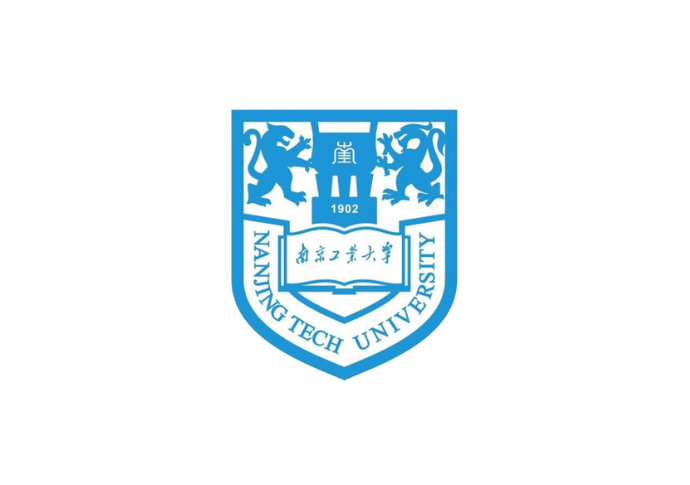

Nanjing Tech University
Computer Science & Technology · 2022 — 2026
Education, community, teaching, and technical projects gradually shaped how I communicate, solve problems, and work with other people.


Each chapter highlights a different kind of growth — technical foundations, community collaboration, and teaching.